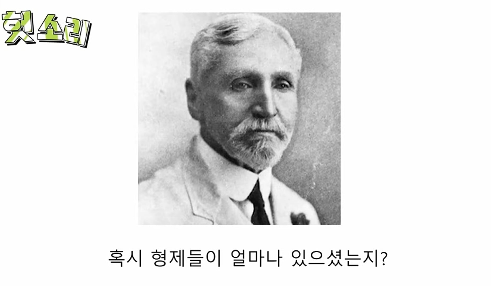
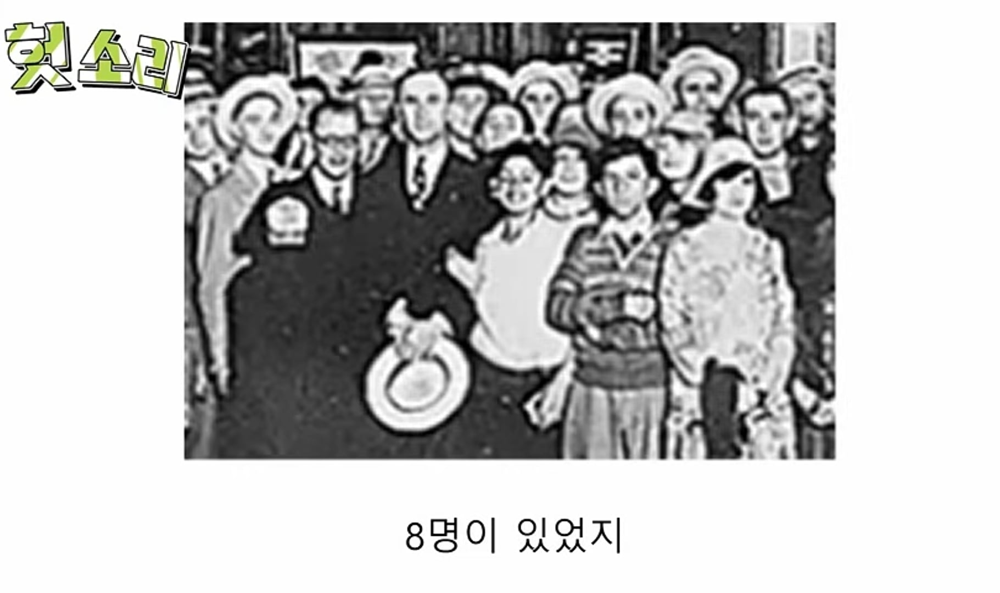
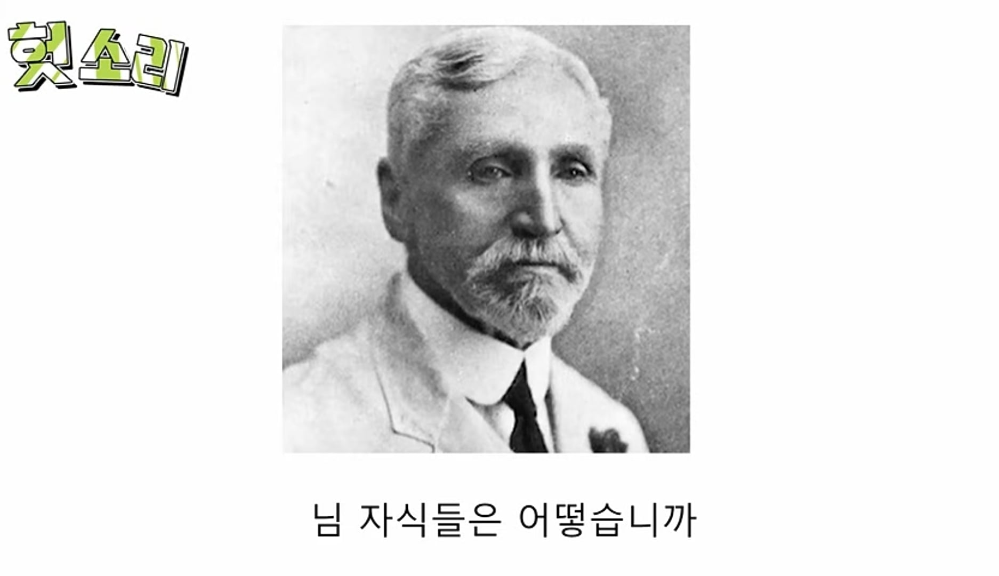
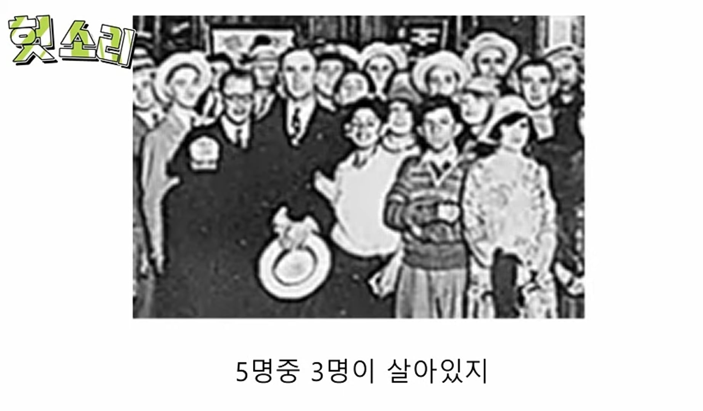
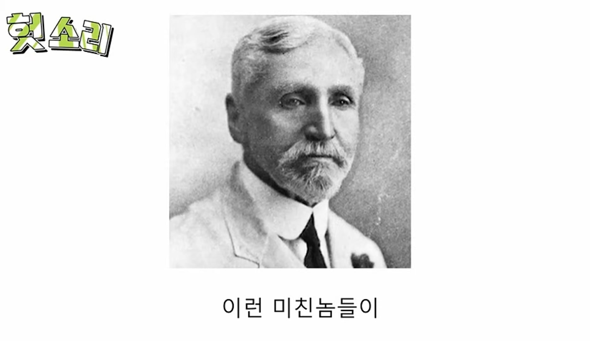
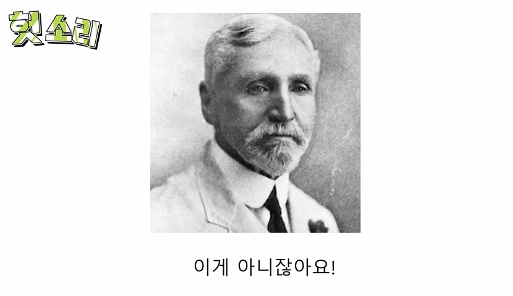
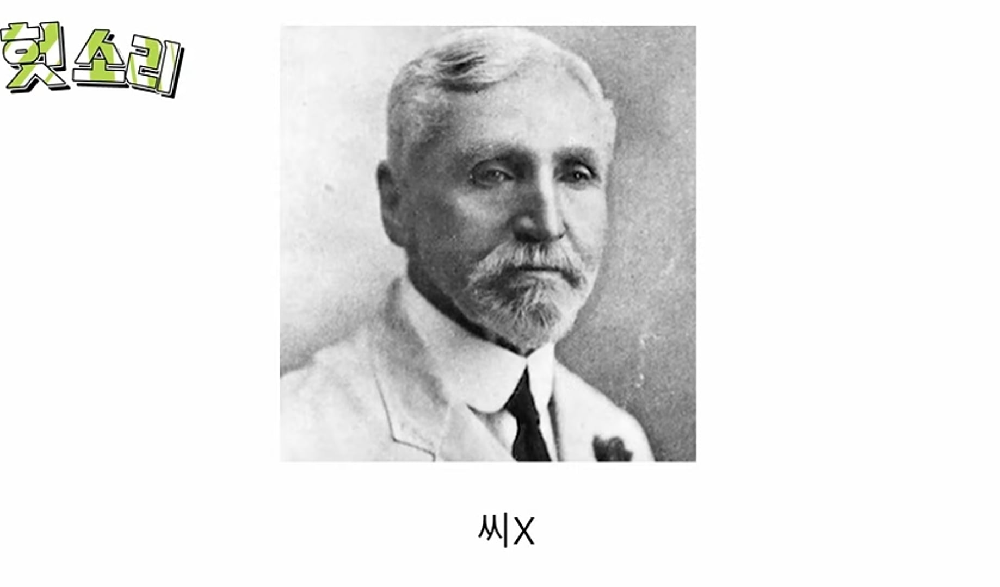

윈슬로 부인 진정 시럽 관련 영상인데....
시럽 문제인걸 제쳐두고 봐도 당시 영아가 사망하면 그러려니 하는게 레전드임 ㄹㅇ....







윈슬로 부인 진정 시럽 관련 영상인데....
시럽 문제인걸 제쳐두고 봐도 당시 영아가 사망하면 그러려니 하는게 레전드임 ㄹㅇ....
자는 또 낳으면 되는데스

그때까지는 인류 역사 내내 그래왔으니까. “자식을 잃어보고 나서야 진짜 어머니가 된다” 같은 소리까지 있었지.
맞습니다...
와우..
우리도 지금 칠팔십대 세대는 주민번호랑 실제나이가 다른 경우가 많다
세살정도 까지 살아남으면 그때 출생신고를 했으니
호적 말고도 족보상 생년월일도 다른 경우가 있더라고요...
애초에 어린아이라고 보호받기 시작한 역사가 100년도 안되고 전세계 어느나라도 자식은 부모가 마음대로 해도 되는 도구 취급이었음 특히 유교권 국가들은 더 심했고
맞습니다...
유교보다는 농경사회의 특징 아님?
ㅇㅇ 그리고 오히려 유교에선 부자유친이라든지 하는 식으로 부모자식간의 친애를 강조함
지금도 8명쯤낳고 7명은 공장보내고 1명만 교육시켜야되는데
그공장 자식이 너일 확률이 높을걸?
레전드 ㅋㅋㅋ
뭐 레전드라기보다는 낳는 족족 생존하는 지금이
인류 역사에서 보면 비정상이 아닐지
자녀 숫자도 그렇고
번번히 살려내지요?
지금이아 어떻게든 살리는거지
저때는 진짜 나약하면 도태되고 사라지는거니...
지금은 애를 1-2명만낳는게 일반적인데.
저렇게 여럿죽던시절에는 죽을거 감안해서 기본 5명씩 낳으니
이때 현대의료기술이 들어오며 인구가 폭팔적으로 증가해버린게 우리 부모님세대.
아프리카 출장다녀온 사람 수기에서 이런 이야기를 봤음.
직원 하나가 무단으로 안나왔는데, 워낙 흔한 일이라 별 신경 안쓰고있었는데.
점심시간쯤 되서 직원이 왔다더라.
왜 늦었냐 물었더니 자기 자식이 죽어서 장례치르고왔다고 하길래 놀라서 오늘 그냥 집에 들어가라 하고 보냈는데,
다른 아프리카 직원들이 뭐 그런일로 집에 보내냐고 이상하게 봤다더라.
그동네는 애들 죽는게 너무 흔하고 당연한 일이라 별 일로 치지도 않는대.
기안이 마다가스카르 갔을때 장례식 분위기보면 마냥 아무것도 아닌일로 치부하진 않는것같던데. 아프리카도 지역마다 차이가 있는거겠지?
영유아랑 성인이랑 따로 치는건 조선시대때도 비슷했으니까. 영아 제사얘기는 못들어봤잖아.
말이 좋아 진정시럽이지 아편 탄 칵테일이라 진정당한거 아니었나 ㅋㅋ
모르핀
지금 어떻게보면 애를 살리는게 너무 당연하게되어서
애하나 못살리면 소아과의사 사형시키니 구속수사니 도의적 위자료니 뭐니 나오니
다들 소아과 안하지..
원래 애기들은 쉽게 죽는 존재였고 돌잔치가 괜히 있는게 아닌데
그것도 일찍일찍 낳은거면 몰라
요즘엔 30후반 40대넘어 낳아놓고 못살리면 의사멱살잡으니 누가함
무지로 인해 죽은것도 많겠지. 아기는 신장 미숙해서 맹물 먹이면 안되는거 나도 자식생기기 전엔 몰랐음
민간요법들 보면 참 어질하다.. 소주 된장 은 만능 소독제요 치료제이다.
돌 거의 다 돼서야 조금씩 먹이는건데 가난하고 굶어서 젖안나오던 시절에 아기 배채운다고 물이라도 먹여서 죽은아기도 있지않을까라는 상상까지 다다르면 좀 슬픔
와 이거 ㅈㄴ 신기하네
다른 동물도 다 그렇잔아 많이낳아서 그중 몇이라도 살아남는 시스템
뭐 전근대는 왕족도 어떻게 못하는 문제긴 했으니 ㅋㅋ
윈슬로 부인의 진정 시럽(Mrs. Winslow's Smoothing Syrup). 1849년 미국의 샬롯 윈슬로 부인이 만든 아이들용 수면제.
당시 맞벌이를 해야 했던 하류층 노동자들은 아이를 돌봐줄 사람이 필요했는데 이 약을 먹이면 5분 만에 잠들어 하루 종일 잤기 때문에 엄청난 인기를 끌었다. 광고문구도 "시럽을 먹여 잠이 든 아이들은 부모가 퇴근할 때쯤 천사 같은 눈동자로 반겨줍니다."였다.
19세기 미국에 간난애가 있는 집엔 모두 다 한 병씩 있을 정도였다고 하며 하류층 맞벌이 외에도 고아원이나 보육원 등에서 많이 사용되었다고 한다. 남북전쟁당시 부상 병사들의 진통제 대용으로도 사용되었다. 당시 윈슬로 부인은 많은 돈을 벌었으며 "어머니의 친구", "고통의 해방자"로 추앙받았으며 위풍당당 행진곡, 사랑의 인사 등을 작곡한 에드워드 엘가는 이 약을 찬양하는 곡을 작곡해 헌정하기도 했다.
하지만 이 시럽의 주성분은 아편과 모르핀이었으며, 이 약을 먹고 사망에 이른 아이들도 많았다. 하지만 당시 영아사망률이 워낙 높았기 때문에 드러나지 않았으며, 당시는 마약의 위험성이 알려지기 이전이라 마약을 쉽게 구할 수 있었다. 실제 간호사 출신이던 윈슬로 부인도 당시 쉽게 구할 수 있었던 아편과 모르핀을 이용했던 것이라고 한다.
항생제 나오기 전까진 어쩔 수 없지 않았나
부모 잃은 아이를 뜻하는 말은 있는데
아이 잃은 부모를 뜻하는 말이 없던게
그게 당연한 시대였다는거라 생각하니 무섭네
자는 또 낳으면 되는 데스
나만 아니면 돼!!!!